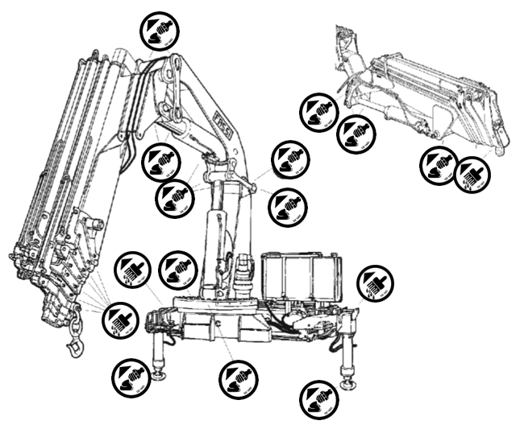

Revisa cada punto de lubricación para mantener la grúa en óptimas condiciones.
Procedimientos de lubricación y simbología de puntos de engrase
Para asegurar el funcionamiento correcto de las partes móviles de la grúa y de los accesorios es necesario engrasar o lubricar las diferentes partes según la frecuencia de mantenimiento recomendada por el fabricante.
En la grúa y en los accesorios, los puntos de engrase están indicados por una simbología correspondiente. Ellos están representados a modo de ejemplo en las figuras siguientes:

Este símbolo indica la presencia de un engrasador.
La lubricación debe ser efectuada utilizando una bomba o una pistola de engrase adecuada
Este símbolo indica la presencia de un punto de lubricación que debe ser efectuada directamente sobre el componente utilizando pincel, rodillo o engrasador.
